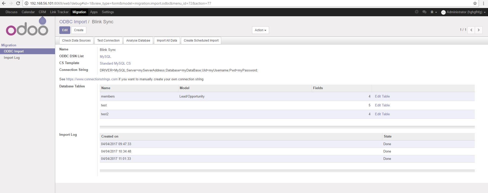
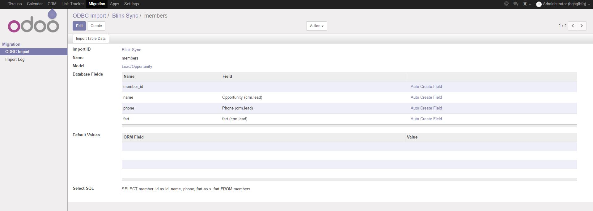
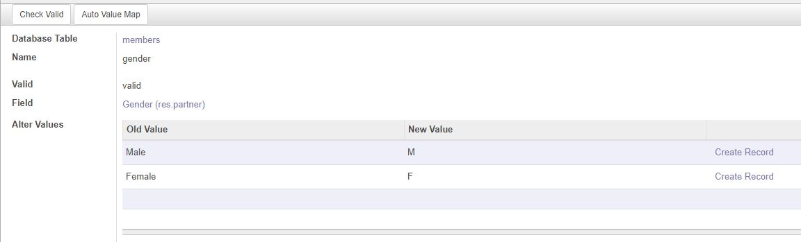

Description
A series of tools designed to assist in migration/synchronisation of external data
for those interested in synchronising data from popular 3rd party apps such as Google Contacts, Quickbooks Online or Mailchimp it is best to download the individual module designed for that purpose.
*NOTE* You will need to install the python package 'pyodbc' and the odbc database driver for your database to operate this module
For a basic guide on setting up the driver please consider checking out this link
https://github.com/mkleehammer/pyodbc/wiki/Drivers-and-Driver-Managers

Import via ODBC
Import data from external databases such as MySQL, Microsoft Access or even dsv files
You can also import the data on a schedule if the external database is in production and constantly gets new data
Instructions
- Install the odbc driver for the database you intent to conect to
- Allow remote access to the database if neccassary
- Go to Migration->Migration->ODBC Import and create a new record
- Click "Check Data Sources" to get a list of available driver then select a connection string template
- Edit the connection string with details about the database such as address, name, username, password
- Test the connection and when successful analyse the database
- Map the database tables to ORM model and the table columns to ORM fields
Auto create fields
Automatically create fields on the fly
Transform data before you import it by modifying the Select SQL, e.g. select concat(firstname,' ',lastname) as name from members
Instructions
- Hit edit table link on the main import wizard from
- You can manually create new fields using the "create and edit" option or use the auto create field link
- Fields are automatically selected if they have the same name as the field in the model e.g. members fax->crm.lead fax


Transform data before importing
Remap values to match the equivalent Odoo values
Transform date formats to match the Odoo default date format
Supported validation rules
Char
- Exceed max field size check
Selection
- Check if value is one of the options in a selection field
Many2one
- Check if value lines up with the name of one of the records
Find a bug or need support? send an email to steven@sythiltech.com.au